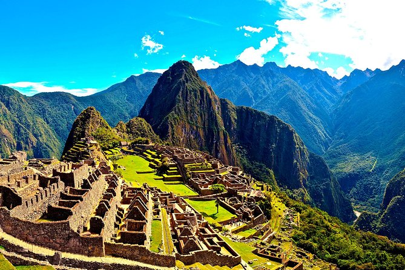

Mi experiencia en Cusco
Cusco fue una de esas ciudades que te roban el aliento. Cada rincón está lleno de historia, colores y energía. Subir a Machu Picchu al amanecer fue simplemente mágico.

Cusco fue una de esas ciudades que te roban el aliento. Cada rincón está lleno de historia, colores y energía. Subir a Machu Picchu al amanecer fue simplemente mágico.